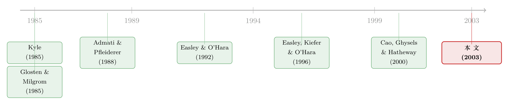

几乎没人交易的那几个小时，价格却没有闲着
本文读的是 Barclay & Hendershott (2003, Review of Financial Studies)：盘后（after-hours）交易量极低——只占纳斯达克全天成交的 4%——却仍能产生「显著但低效」的价格发现；而且因为信息不对称随交易日推进而衰减，开盘前的价格比收盘后的价格更干净、更含私有信息。一句话：价格发现并不需要很多交易，但很多交易会让价格发现更有效率。
1 一个反直觉的开场
先问一个看似幼稚的问题：要让一只股票的价格「对」，到底需要多少笔交易？
直觉上的答案几乎是不假思索的——当然是越多越好。教科书里的微观结构理论一遍遍告诉我们，成交量是价格发现 (price discovery) 的燃料：买卖越频繁，做市商更新报价越快，新信息被吸收进价格的速度也就越快。在大多数研究里，这个判断没法被真正检验，因为交易日之内、交易日之间，知情交易与噪声交易的相对多少其实变化都不大 [Admati and Pfleiderer (1988)；Foster and Viswanathan (1993)]。换句话说，我们手头几乎没有「成交量骤减」的极端样本，去看看价格在「几乎没人交易」时会发生什么。
但有一个天然的实验室一直被忽略：收盘以后、开盘以前的那几个小时。
技术——具体说是电子通讯网络 (electronic communications networks, ECNs)，如 Instinet、Island、Archipelago——已经让任何人都可以在交易所打烊之后直接挂单、成交。可现实是，绝大多数人并不这么做。纳斯达克全天成交里，只有 4% 发生在盘后。于是，盘后给了我们一个别处看不到的反差：交易量断崖式下跌，可信息照样在累积。本文要问的，正是在这样一个「人去楼空」的市场里，价格发现还剩下多少。
这篇论文的魅力，不在于它发现了「盘后交易量很低」这个谁都知道的事实，而在于它把这个低交易量当成一面棱镜，去分解价格发现的内部结构：有多少、何时发生、由谁完成、是公开信息还是私有信息、以及——最关键的——干不干净。
2 把一天切成三段：开盘前、收盘后、与隔夜
接着，一个自然的问题是：盘后不是铁板一块，它内部还有结构吗？
作者把交易所之外的时间切成三段：开盘前（preopen，8:00–9:30 A.M.）、收盘后（postclose，4:00–6:30 P.M.）、以及隔夜（overnight，6:30 P.M.–8:00 A.M.）。绝大部分盘后交易挤在收盘后那一两个小时和开盘前那一段，隔夜基本只剩 Instinet 的午夜撮合系统在零星运转。
数据上，盘后交易高度集中在最活跃的股票里。作者按交易日的美元成交额给纳斯达克股票排序，取最高的 250 只（剔除存托凭证 ADR），样本期 2000 年 3 月到 12 月，共 212 个交易日。就这 250 只股票，已经占了所有纳斯达克盘后成交额的 75%、盘后笔数的一半以上；排在它们后面的股票，盘后交易稀薄到一天不到 20 笔，没法分析。最活跃那一档（最高分位）的股票，收盘后和开盘前各自大约 150 笔/天，日均成交额分别约 2000 万和 800 万美元。
这里出现了第一个值得停下来的细节：盘后的单笔交易要大得多。从早上 8:00 起，平均和中位交易规模就是白天的两倍；收盘后平均交易规模几乎翻三倍，从白天的约 $38,000 涨到收盘后的 $90,000 以上，到下午 5:00 左右更是高达约 $500,000。这和我们对盘后参与者的预期是吻合的：能扛着低流动性、四到五倍于白天的交易成本 [Barclay and Hendershott (2003)] 还要进场的，多半是专业或准专业的玩家。
然后，真正有意思的对照来了。看波动率与成交量的脱节：开盘前最后半小时（9:00–9:30）只有白天第一个半小时 5% 的成交量，却贡献了那段时间 72% 的波动率；收盘后第一个半小时（4:00–4:30）只有白天最后半小时 20% 的成交量，却有 54% 的波动率。极低的成交量，配着一点都不低的波动——价格显然在动，可推动它的不是「量」。这正是全文要解释的核心张力。
3 识别策略：谁在盘后交易？——一个能「数」出知情交易的结构模型
但真正关键的一步，在于把「价格在动」翻译成「谁让它动的」。波动率高，可能是知情交易者在用私有信息推动价格，也可能只是流动性枯竭下的噪声。要把两者分开，光看价格不够，得有一个能从「买卖笔数」反推「知情程度」的结构。
作者用的是 Easley, Kiefer, and O'Hara (1996, 1997a,b) 的结构模型（下称 EKO 模型）。它的逻辑链条是这样的：每个交易期开始时，以概率 \(\alpha\) 出现一个关于资产价值的私有信号；信号出现时，以概率 \(\delta\) 是坏消息、以 \(1-\delta\) 是好消息。流动性交易者（uninformed）以速率 \(\varepsilon\) 持续到来，买卖都有；知情交易者（informed）只在有新信息时以速率 \(\mu\) 到来——看到好消息就买、坏消息就卖。做市商观察不到信号，只能看到买单数 \(B\) 和卖单数 \(S\)。
模型的妙处在于：正常水平的买卖被解读为流动性交易（识别 \(\varepsilon\)），异常的买盘或卖盘失衡被解读为信息驱动的交易（识别 \(\mu\)），而出现这种失衡的期数则用来识别 \(\alpha\) 和 \(\delta\)。把这一切交给极大似然同时估计，就能得到那个核心指标——知情交易概率 (probability of an informed trade, PIN)：
PIN 就是知情交易流在全部交易流里所占的比重。分子是知情的，分母里那个 \(2\varepsilon\) 把买卖两侧的流动性交易都算进去——所以 PIN 越高，意味着你随手撞上的某一笔交易越可能来自一个「知道点什么」的人。
为了让读者看清这把尺子是怎么造出来的，把单个交易期的似然函数完整写出来。假设知情与无知情交易者的到达都服从泊松过程，\(T\) 为期长，参数向量 \(\theta=(\alpha,\delta,\mu,\varepsilon)\)：
$$ L\big((B,S)\,\big|\,\theta\big) = (1-\alpha)\,e^{-\varepsilon T}\frac{(\varepsilon T)^{B}}{B!}\,e^{-\varepsilon T}\frac{(\varepsilon T)^{S}}{S!} $$
$$ +\;\alpha\delta\,e^{-\varepsilon T}\frac{(\varepsilon T)^{B}}{B!}\,e^{-(\mu+\varepsilon)T}\frac{\big((\mu+\varepsilon)T\big)^{S}}{S!} $$
$$ +\;\alpha(1-\delta)\,e^{-(\mu+\varepsilon)T}\frac{\big((\mu+\varepsilon)T\big)^{B}}{B!}\,e^{-\varepsilon T}\frac{(\varepsilon T)^{S}}{S!} $$
一步步看它为什么长这样：
- 第一行是「无消息日」，发生概率 \(1-\alpha\)。这一天没有知情交易者进场，买和卖都只由流动性交易者贡献，两侧的到达率都是 \(\varepsilon\)，于是 \(B\) 和 \(S\) 各自服从均值 \(\varepsilon T\) 的泊松分布，相乘即可。
- 第二行是「坏消息日」，发生概率 \(\alpha\delta\)。坏消息让知情者去卖，所以卖方一侧的到达率被抬高到 \(\mu+\varepsilon\)（知情 + 无知情叠加），而买方一侧仍是 \(\varepsilon\)。
- 第三行是「好消息日」，发生概率 \(\alpha(1-\delta)\)。对称地，知情者去买，买方一侧到达率变成 \(\mu+\varepsilon\)，卖方一侧保持 \(\varepsilon\)。
三种「世界」按各自概率加权混合在一起——这是一个典型的混合分布 (mixture of distributions)。EKO 假设各交易日之间相互独立，把每天的似然连乘，再做极大似然，就同时把 \(\alpha,\delta,\mu,\varepsilon\) 都估出来了。作者对每只样本股票，分别在开盘前、收盘后、交易日三段各估一套参数。
这套结构模型，就是本文识别的根基：它不是靠「我觉得开盘前知情交易多」的猜测，而是真的从买卖笔数的统计形态里，把知情成分数了出来。
4 主要结果：低交易量，照样有价格发现——只是不干净
有了这把尺子，论文的核心发现一个接一个落地。
第一，开盘前的知情程度全天最高。 跟假设一致，开盘前的 PIN 在全部五个成交额分位里都高于收盘后，其中四个分位的差异在 0.01 水平上显著。直觉很自然：各种微观结构模型都预言信息不对称会随交易日推进而衰减 [Kyle (1985)；Glosten and Milgrom (1985)；Easley and O'Hara (1992)]，而公开与私有信息都在隔夜「无人交易」时悄悄累积。于是信息不对称在收盘后最低、在开盘前最高。反过来，流动性需求的节奏正相反：隔夜持有一个次优组合代价高昂 [Brock and Kleidon (1992)]，所以想做组合再平衡的流动性交易者更愿意挤在收盘后，而不是开盘前。两股力量叠加——开盘前知情比例高、流动性交易少，收盘后反之。
第二，单笔交易的信息含量，盘后高于白天。 虽然交易日总的价格发现量远远最大（毕竟笔数压倒性地多），但每笔交易的价格发现，开盘前最高。这其实是同一枚硬币的另一面：盘后流动性交易稀薄，剩下的每一笔都更可能是知情的。
第三，谁在哪里交易，决定了价格在哪里被发现。 收盘后，知情交易和价格发现都较少，多数交易是和做市商成交的；而开盘前，多数交易、以及几乎全部价格发现，发生在 ECN 上。这与 Barclay, Hendershott, and McCormick (2003) 的发现一致：知情交易者看重 ECN 的速度与匿名，流动性交易者则常更愿意和做市商谈价。（关于「知情者为何偏爱匿名电子市场」这条线，可参见《匿名的市场，反而藏不住「聪明钱」》与《报价，是邀请，还是暗号？》。）
第四，也是把全文收口的一步——盘后的价格更不干净。 收盘后买卖价差很大 [Barclay and Hendershott (2003)]、交易稀薄、新信息很少，结果是收盘后的交易常引发暂时性的价格变动、随后又被反转，价格因此低效、信噪比 (signal:noise ratio) 很低。开盘前的价差同样大，但知情交易频率高，使得开盘前价格变动的信噪比高于收盘后——尽管它仍然比白天嘈杂。
于是反转出现了：开场我们以为「没人交易 = 没有价格发现」，结论却是——用极少的交易，照样能把公开和私有信息都装进价格里；但更大的流动性交易量确实让这个过程更顺、价格更有效率，这正是为什么白天的价格最干净。低交易量不是价格发现的绝缘体，只是它的「降噪器」失灵了。
5 文献脉络
把这篇论文放回它生长的那条藤上，会看得更清楚。
最早的根，是知情交易的理论骨架：Kyle (1985) 的连续拍卖与内幕交易模型、Glosten and Milgrom (1985) 的逐笔报价模型，奠定了「价差源于逆向选择、信息不对称随时间衰减」的基本图景；Admati and Pfleiderer (1988) 则解释了日内成交量与波动率为何聚集。Easley and O'Hara (1992) 把「时间本身」纳入价格调整过程，进一步指出无交易的时段也在传递信息。

接着，这条理论被「结构化」成可估计的工具：Easley, Kiefer, and O'Hara (1996, 1997a,b) 把上述思想压缩成一个能从买卖笔数反推知情概率的似然模型，PIN 由此诞生。与此并行的另一支，是「无交易也能价格发现」的实证：Cao, Ghysels, and Hatheway (2000) 研究纳斯达克开盘前做市商非约束性报价里的价格发现，Biais, Hillion, and Spatt (1999) 研究巴黎证交所开盘前的学习过程——但它们关注的都是「没有成交、只有报价」时的价格发现。
本文（2003）站的位置很特别：它不是研究「没有交易」，而是研究「有交易、但极少」。它把 EKO 的结构模型搬到盘后这个低流动性实验室，第一次系统地刻画了在真实成交极度稀薄时，价格发现的量、时点、场所、公私构成与效率。
6 评论与延伸（Q&A + 研究方向）
(a) 几个可能的疑问
Q：PIN 高，就一定等于「私有信息多」吗？会不会只是噪声被误读成了知情交易？
这是 EKO 模型最受质疑的地方。模型把「异常的买卖失衡」解读为知情交易，但流动性枯竭本身也会制造失衡。本文部分地缓解了这个担忧：它不止看 PIN，还独立地看价格变动是否被反转（信噪比）。如果盘后的失衡纯属噪声，价格变动应当几乎全被反转、信噪比接近零；而开盘前信噪比显著高于收盘后，说明那里的失衡确实含有真信息，而非纯噪声。
Q：开盘前 PIN 最高，会不会只是因为开盘前根本没几个流动性交易者，分母小导致 PIN 机械地变大？
某种意义上，这正是经济机制本身，而非统计假象。PIN 的定义就是知情交易流占总交易流的比重；开盘前流动性交易者退场（\(\varepsilon\) 小），剩下的更可能是知情者——这不是偏误，而是「信息不对称随日推进衰减」这一理论预言的直接体现。需要警惕的反而是另一面：极少的交易笔数会让 \(\mu,\varepsilon\) 的极大似然估计方差很大，分位层面的显著性要谨慎读。
Q：为什么收盘后明明交易更多，揭示的信息反而更少？
因为「多」的是流动性交易，不是知情交易。隔夜信息尚未累积，收盘后紧接白天、信息不对称处于全天最低点；同时组合再平衡的需求在收盘后最旺。于是收盘后是「高量、低知情」，开盘前是「低量、高知情」。信息总量取决于知情交易，不取决于总笔数。
Q：这套结论只适用于纳斯达克这种做市商市场吗？换成限价订单簿市场还成立吗？
部分机制是市场结构特有的——「收盘后多和做市商成交、开盘前多在 ECN 成交」直接依赖纳斯达克的双轨结构。但更底层的命题（信息不对称随日衰减、低流动性下价格发现变得低效）是结构无关的，理应能在纯电子限价簿市场里重新检验。
Q：作者怎么排除「盘后交易其实是白天交易的延迟上报」这种数据污染？
这是个实打实的隐患。历史上纳斯达克确有大量交易延迟上报、尤其大宗交易常在白天拼好、收盘后才打印 [Porter and Weaver (1998)]。作者依赖 NASD 在样本期对延迟上报的监管收紧、以及电子交易系统的普及（减少了电话交易这一延迟上报的温床），论证延迟上报已降到微不足道。这一条更多是制度性论证，而非内生于数据的检验，算是识别上的一个软肋。
Q：盘后价格「低效」，那它对白天开盘价还有用吗？
有用但有限。开盘前价格信噪比虽不如白天，却显著高于收盘后，意味着它对开盘价的指引价值是实在的——私有信息确实在开盘前就开始进入价格。只是这种价格发现「贵」（价差大、成本高）且「脏」（仍比白天嘈杂），所以是「显著但低效」。
(b) 几个可能的研究问题与提案
1. 把这套「低流动性价格发现」搬到公司债市场。 【经济故事】公司债天生就是一个「盘后」式市场：场外、稀薄、单笔巨大、信息高度不对称——和本文刻画的开盘前环境惊人地相似。如果「低交易量也能产生显著但低效的价格发现」成立，那公司债的价格发现应当高度集中在少数知情大单上。 【可行性】高。TRACE 提供逐笔成交，可在债券层面估计类 PIN 指标，并用价格反转度量效率。识别上可借助评级变动、盈余公告等信息事件做事件窗口。（与《订单流里的「悄悄话」：当分歧越大，债市越听它说话》是天然的对话对象。）
2. 外资持有人是不是「盘后知情交易者」的一个具体身份？ 【经济故事】时区差异让外国投资者天然在美股盘后活跃。如果盘后知情交易比例高，那么部分知情者可能正是手握跨境信息的外资。能否用持有人国别 × 盘后交易，检验「外资在盘后的单笔信息含量」？ 【可行性】中。难点在于把盘后成交映射到投资者类型，需要券商或托管层面的数据；可退而求其次，用 13F 季度持仓变化与盘后净失衡做粗略关联。（参见《你以为美国人在「追涨」外国股票，其实他们手里攥着一份全球情报》。）
3. 盘后价格发现的效率，是否随做市商参与度内生变化？ 【经济故事】本文发现收盘后多和做市商成交、开盘前多在 ECN。如果做市商提供的是「有库存缓冲、但慢」的流动性，ECN 提供的是「快、匿名、但浅」的流动性，那么价格效率应当随两者占比此消彼长。 【可行性】中。需要把盘后成交按交易场所（做市商 vs ECN）拆分，再分别估信噪比。数据上可行（NASD/Nastraq 有场所标识），识别上可利用 2000 年 2 月纳斯达克开始发布收盘后内部报价这一制度断点做准自然实验。
4. 用现代高频数据重估二十年后的盘后世界。 【经济故事】2000 年盘后只占 4% 成交；二十多年后，延长交易时段、24 小时 ETF、散户 app 的兴起可能彻底改写了盘后的参与者构成。今天的盘后，知情者还是主角吗，还是已被散户噪声淹没？ 【可行性】高。数据现成，方法照搬即可；真正的看点是参与者结构变化导致的 PIN 与信噪比演变，可与本文做一次干净的「同方法、跨时代」对照。
7 我的判断
这篇论文的贡献，是把一个几乎无人问津的「死时段」，变成了检验微观结构理论的一处罕见实验室。它最漂亮的地方不是任何单一系数，而是把价格发现拆成五个维度——量、时点、场所、公私构成、效率——并用一个结构模型让「谁在交易」变得可测。「低交易量也能产生显著但低效的价格发现」这个命题，干净、可证伪、且与理论严丝合缝，二十多年后仍是讨论盘后与低流动性市场绕不开的起点。
对识别，我有两点保留。其一是延迟上报：作者对「盘后成交确系盘后执行」的论证主要依赖制度收紧的叙述，而非数据内生的检验，万一仍有残留的白天大宗延迟打印混进来，会系统性地高估收盘后的交易规模与知情程度。其二是 PIN 本身：在交易笔数极少的开盘前，极大似然估计的有限样本偏误与方差都不容小觑，分位层面「四个分位显著」的结论，换一个估计窗口未必稳健。
后续我最想看到的，是把这套框架接到信用市场和外资持有人上——公司债的盘后性、外资的时区知情，都是本文逻辑的天然延伸；以及用今天的高频数据做一次「同方法、跨时代」的重估，看看当散户大举涌入盘后之后，那个「显著但低效」的结论是被强化了，还是被噪声彻底冲垮了。
参考文献
- Admati, A., and P. Pfleiderer (1988). A Theory of Intraday Patterns: Volumes and Price Variability. Review of Financial Studies 1(1), 3–40.
- Barclay, M., and T. Hendershott (2003). Liquidity Provision, Adverse Selection, and Trading Costs After Hours. Journal of Finance (forthcoming).
- Barclay, M., T. Hendershott, and T. McCormick (2003). Competition Among Trading Venues: Information and Trading on Electronic Communications Networks. Journal of Finance 58(6), 2639–2667.
- Biais, B., P. Hillion, and C. Spatt (1999). Price Discovery and Learning During the Preopening Period in the Paris Bourse. Journal of Political Economy 107(6), 1218–1248.
- Brock, W., and A. Kleidon (1992). Periodic Market Closure and Trading Volume. Journal of Economic Dynamics and Control 16(3–4), 451–489.
- Cao, C., E. Ghysels, and F. Hatheway (2000). Price Discovery without Trading: Evidence from the Nasdaq Pre-opening. Journal of Finance 55(3), 1339–1365.
- Easley, D., and M. O'Hara (1992). Time and the Process of Security Price Adjustment. Journal of Finance 47(2), 576–605.
- Easley, D., N. Kiefer, and M. O'Hara (1996). Cream-Skimming or Profit-Sharing? The Curious Role of Purchased Order Flow. Journal of Finance 51(3), 811–833.
- Easley, D., N. Kiefer, and M. O'Hara (1997a). The Information Content of the Trading Process. Journal of Empirical Finance 4(2–3), 159–186.
- Easley, D., N. Kiefer, and M. O'Hara (1997b). One Day in the Life of a Very Common Stock. Review of Financial Studies 10(3), 805–835.
- Foster, F. D., and S. Viswanathan (1993). Variations in Trading Volume, Return Volatility, and Trading Costs: Evidence on Recent Price Formation Models. Journal of Finance 48(1), 187–211.
- Glosten, L., and P. Milgrom (1985). Bid, Ask and Transaction Prices in a Specialist Market with Heterogeneously Informed Traders. Journal of Financial Economics 14(1), 71–100.
- Kyle, A. (1985). Continuous Auctions and Insider Trading. Econometrica 53(6), 1315–1336.
- Porter, D., and D. Weaver (1998). Post-Trade Transparency on Nasdaq's National Market System. Journal of Financial Economics 50(2), 231–252.